Los documentos de Excel se denominan “libros” y están divididos en “hojas”. La hoja de cálculo es el espacio de trabajo. Excel 2007 comparte la misma interfaz de otros programas de la suite Office 2007, por lo tanto, encontraremos el Botón de Office y la Cinta de opciones, organizada en fichas y grupos.
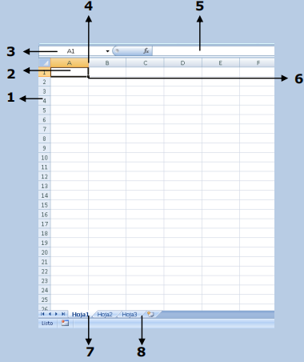1) Filas: espacios horizontales de la hoja de cálculo. Se identifican con números. Cada hoja de cálculo de Excel 2007 tiene 1.048.576 filas.
2) Celda: es la unidad de trabajo de la hoja de cálculo. Es la intersección de una columna con una fila. Se identifica con la letra de la columna y el número de la fila, como por ejemplo, A1.
3) Cuadro de nombres: muestra el nombre de la celda activa.
4) Columnas: espacios verticales de la hoja de cálculo. Se identifican con letras. Cada hoja de cálculo de Excel 2007 tiene 16.384 columnas.
5) Barra de fórmulas: muestra el contenido de la celda activa (celda seleccionada). A la izquierda de la Barra de fórmulas se encuentra un asistente para insertar funciones.
6) Controlador de relleno: es un pequeño punto de color negro que se encuentra en la esquina inferior derecha de la celda seleccionada. Cuando acercamos el mouse al controlador de relleno, el puntero toma la forma de un cruz negra fina y pequeña. El controlador de relleno es muy útil para copiar fórmulas y rellenar rápidamente datos en una planilla.
7) Etiquetas: las etiquetas identifican a las hojas de cálculo. Si hacemos clic con el botón secundario del mouse sobre la etiqueta podemos cambiarle el nombre, el color, y otras acciones que veremos más adelante.
8) Insertar hoja de cálculo: de forma predeterminada, Excel 2007 presenta 3 hojas de cálculo, pero desde este ícono podemos agregar más.
-Rango de celdas:
cuando seleccionamos más de una celda hablamos de un “rango”, por ejemplo, A1:B5 significa que estamos afectando un rango formado por 10 celdas, ya que los dos puntos (:) significan “hasta”. En cambio, si nombramos a un rango A1;B5, afectamos solo 2 celdas (A1 y B5), ya que el punto y coma (;) significa “y”. Más adelante, cuando veamos funciones, comprenderemos mejor este concepto.
Alineación predeterminada de texto y números:
de forma predeterminada, los caracteres de texto se alinean a la izquierda, y los números a la derecha. Excel reconoce como números a los números enteros, decimales, fechas y horas. Es decir, que pueden ser utilizados en operaciones de cálculo.
Para Excel, una fórmula es una ecuación que nos permite realizar cálculos con los valores que tenemos ingresados en la hoja de cálculo. Para que Excel identifique que estamos solicitando que realice un cálculo, toda fórmula debe comenzar con el signo = (igual).
Para relacionar en una fórmula los distintos valores que vamos a utilizar en un cálculo, tenemos que usar operadores. Los operadores básicos de Excel son:
(+ SUMA) (- RESTA) (* MULTIPLICACIÓN) (/ DIVISIÓN)
En una fórmula podemos usar valores constantes, como por ejemplo, =5+2. El resultado será, por supuesto, 7; sin embargo, si tuviéramos que cambiar esos valores, el resultado será siempre 7. En cambio, si en la fórmula utilizamos referencias a las celdas que contienen los valores, el resultado se modificará automáticamente cada vez que cambiemos alguno o ambos valores. Por ejemplo, si en las celdas A1 y B1 ingresamos valores constantes y los utilizamos en una fórmula para calcular la suma, podemos escribir =A1+B1 y de este modo, si modificamos cualquiera de esos valores, el resultado se ajustará automáticamente a los valores que encuentre en las celdas a las que se hace referencia en la fórmula
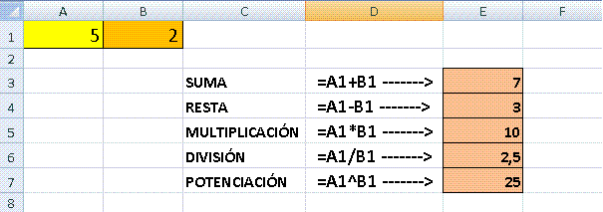Cuando en una misma fórmula tenemos que realizar diferentes tipos de cálculo, Excel resolverá las operaciones dentro de la fórmula con un determinado orden de prioridad, siguiendo el criterio matemático de separación en términos. De este modo, el resultado de =3+4+5/3 es 8,67 que resulta de:
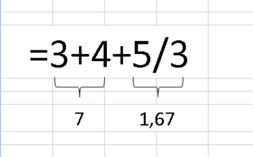Si necesitamos obtener otro tipo de resultado, podemos introducir paréntesis en la fórmula, para indicarle a Excel que primero debe realizar los cálculos que se encuentran dentro de ellos. De este modo, el resultado de =(3+4+5)/3 es 4, que resulta de:
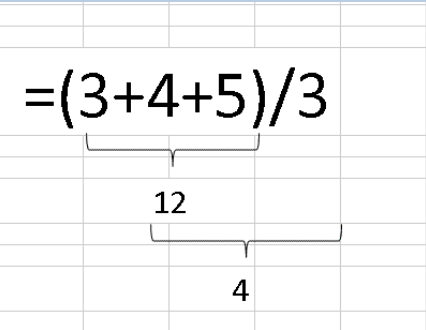El orden de prioridad que aplica Excel para realizar los cálculos básicos que encuentra en una misma fórmula es:
1º) Cálculos entre paréntesis
2º) Multiplicación y división
3º) Suma y resta
Una referencia relativa en una fórmula, como A1, se basa en la posición relativa de la celda que contiene la fórmula, de tal manera que si cambia la posición de la celda que contiene la fórmula, se cambia la referencia. Si se copia la fórmula en filas o columnas, la referencia se ajusta automáticamente.
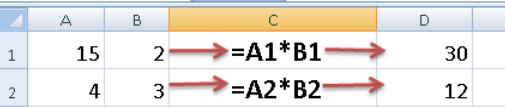Una referencia absoluta de celda en una fórmula, como $A$1, siempre hace referencia a una celda en una ubicación específica. Si cambia la posición de la celda que contiene la fórmula, la referencia absoluta permanece invariable. Si se copia la fórmula en filas o columnas, la referencia absoluta no se ajusta.
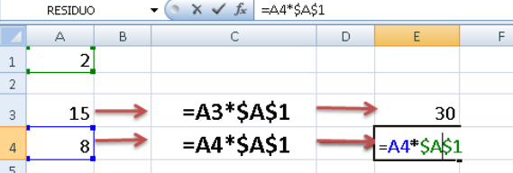Excel permite darle distintos formatos (estilos) a nuestros datos, para poder presentarlos mejor. Algunos de esos formatos son similares al procesador de textos Word y otros son específicos de este programa.
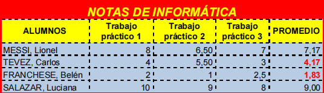Todas las opciones para trabar con formatos esta en la pestaña de inicio.
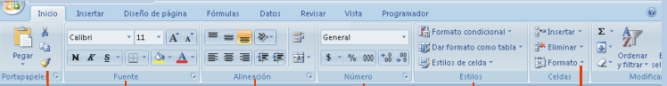Un formato condicional cambia el aspecto de un rango basandose en una condicion. Si se cumple la condicion el aspecto del rango de celda se cambiara al deseado de lo contrario el rango de celdas se quedara tal como esta.
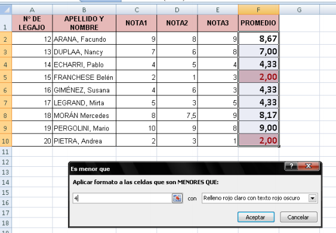En excel, una funcion es una formula que usa palabras específicas en una estructura determinada. Se usa para facilitar los calculos.
Existen muchos tipos de funciones de excel, para realizar distintos tipos de calculos, pero todas tienen la misma estructura.
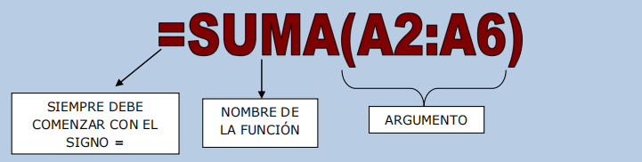El argumento en una funcion es donde es el lugar de aplicacion de la misma, puede ser un rango de celdas, comparaciones de celdas, valores, textos, otras funciones, dependiendo del tipo de funcion o situacion de aplicacion.
Las funciones se pueden clasificar por categorías: Fecha, Matemáticas, Estadísticas, Lógicas, Financieras, etc.
Algunas funciones no usan argumentos, Algunas pueden ser:
Otras Funciones pueden tener de argumento un rango de celdas, algunas pueden ser:
En Excel encontramos un grupo de funciones que se utilizan para contar datos, es decir, la cantidad de celdas que contienen determinados tipos de datos.
La funcion SI es una funcion logica, tal como su nombre indica, implica condicionales. Es decir que frente a la situacion dada(condicion) apareceran dos opciones posibles:
Muchas veces, tendremos que utilizar varias funcioes, una dentro de la otra. Cuando metemos una funcion dentro de otra, tenemos una funcion anidada. Las funciones que “metemos dentro” de otra función actúan como argumentos de la función principal
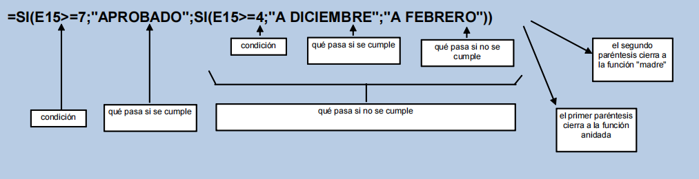La función Y devuelve VERDADERO si se verifican todas las condiciones planteadas en su argumento. Si se verifica una sola de las condiciones o ninguna, devuelve FALSO.
Ejemplo:
Para aprobar un curso los alumnos deben considerar dos variables:
=Y(B2<=25;C2>=4)
La función O devuelve VERDADERO si se verifica una sola de las condiciones planteadas en su argumento. Si no se verifica ninguna condición, devuelve FALSO.
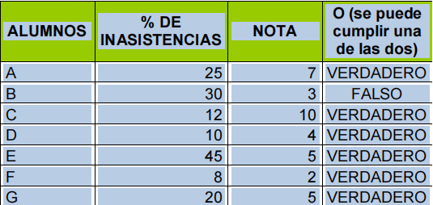=O(B2<=25;C2>=4)
Las funciones Y-O se usan anidadas a la funcion SI, para obtener un resultado con sentido.
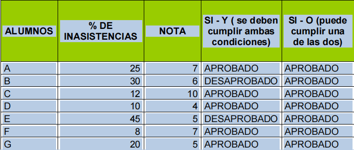La función Y y la función O se utilizan como condición en el argumento de la función SI:
La funcion BUSCARV relaciona dos tablas da datos, estableciendo una correspondencia entre las mismas. Busca un valor especifico en una columna de una tabla y devuelve, en la misma fila, un valor de otra columna de otra tabla, denominada Matriz de datos.
NOTA: La letra V del nombre de la funcion significa VERTICAL, es decir, busca los datos que se encuentran en columnas.
Ejemplo:
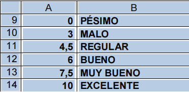 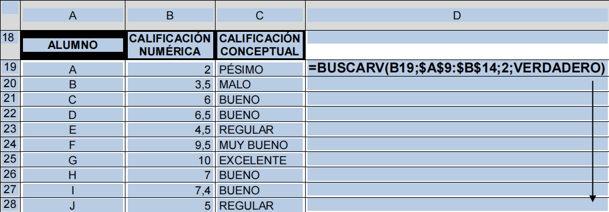 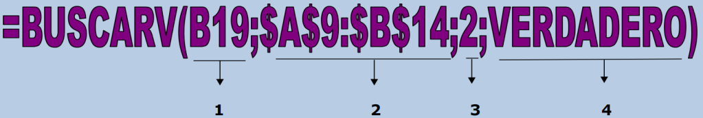